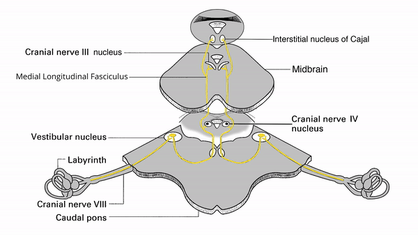

Vertical Saccades


- Signal goes to the visual cortex, then to the occipital-parietal and frontal gaze centers in both hemispheres; from both those cerebral hemisphere gaze centers, the signal goes down to the superior colliculus and on to the rostral interstitial nucleus of the MLF (riMLF) to initiate vertical saccades; the signal also goes to the interstitial nucleus of Cajal (INC) to maintain eccentric gaze
- Upward saccades
- Downward saccades


-
Bilateral cerebral hemisphere lesions
- Impaired vertical saccades and pursuit
- Spares the vertical vestibulo-ocular reflex because the vestibulo-ocular pathway is restricted to the brainstem
-
Dorsal (tectal) midbrain lesion
- Impairs upgaze saccades, pursuit, and the vestibulo-ocular reflex
- Other features
- Ventral (tegmental) midbrain lesion
